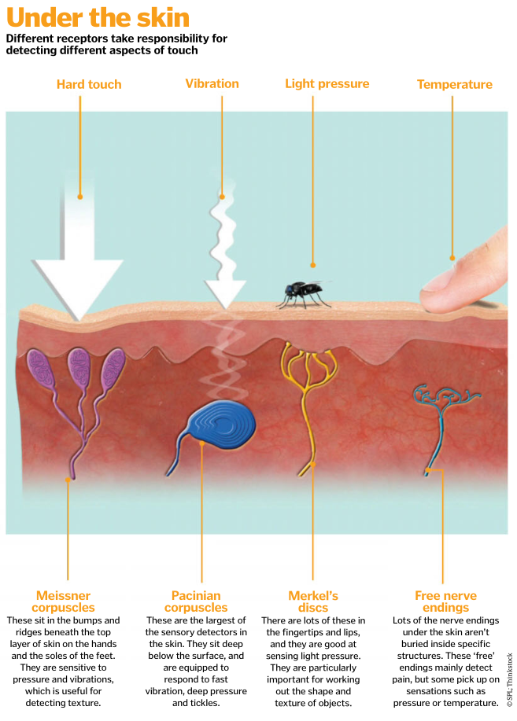

The skin uses different detectors (called sensory receptors) to tell the difference between pressure and pain, hot and cold, and a light brush versus a hard poke. These receptors are specially adapted nerve endings, and many are wrapped in layers of tissue, helping them to function in various ways. They are located in different numbers across your body, with more in your hands, feet and lips than anywhere else. Some respond quickly before stopping, allowing you to grow accustomed to sensations that don’t need constant monitoring, like the feeling of your clothes against your skin. Others are slow to stop signalling, so you remain aware of the sensation.
Skin senses
